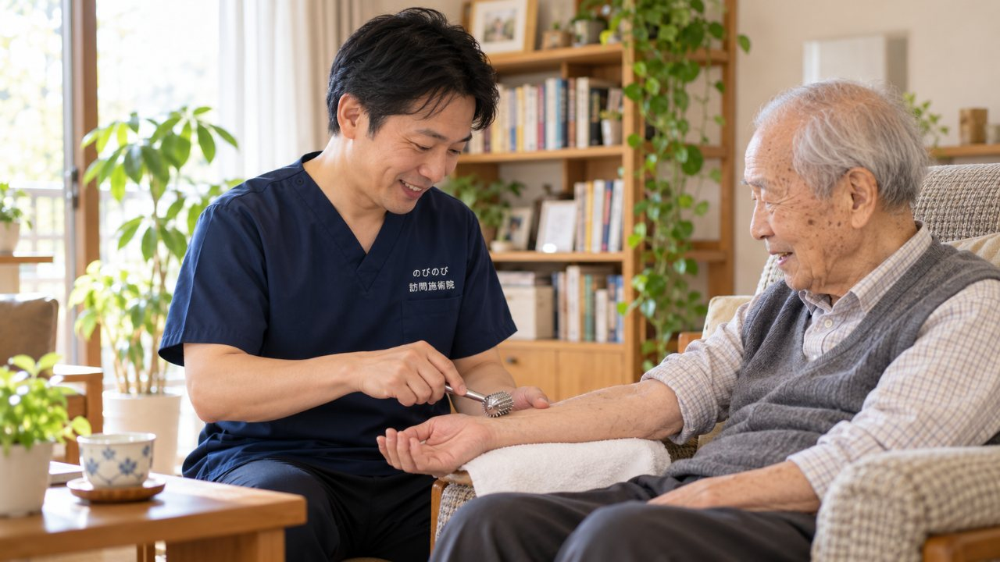

家に来てもらって鍼やお灸を受けると聞くと、「本当に効くのか」「あやしい商売ではないか」と身構える方が多くおられます。まして親御さんのことなら、なおさら慎重になるのが自然です。その用心深さは、むしろ健全なものだと思います。ですから、施術する側の立場から、都合の悪いことも含めて正直にお答えします。効果のこと、費用のこと、用心すべき勧め方の見分け方まで、順番に整理していきます。
はじめに要点だけ。訪問鍼灸マッサージは、国家資格を持つ施術者が医師の同意にもとづき医療保険で行う正規のケアです。鍼やお灸には、こわばりをやわらげ血のめぐりを促し、痛みやしびれのつらさを軽くする補助が期待できます。ただし病気そのものや変形、神経の障害を治すものではなく、あらわれ方には個人差があります。「必ず治る」と言い切ったり高額な回数券を強く勧めたりする施術こそ用心すべきです。費用は国の基準どおりで、1回の総額は3,950円、1割負担でおよそ395円。合わなければ、いつでも見直せます。
「怪しいのでは」と感じるのは、むしろ自然なことです
知らない人が自宅に上がって施術をする。しかも保険が使えるという。こう聞いて、まず身構えてしまう方はよくいらっしゃいます。過去に強引な訪問販売や、高額な健康商品の勧誘に嫌な思いをした経験があれば、なおさら警戒するのが普通です。その感覚は、決しておかしなものではありません。むしろ、ご家族のことを守ろうとする、まっとうな用心だと思います。そのため、こちらもどんな資格で何をするのかをあいまいにせず、正直にお伝えする必要があると考えています。効くと言い切って安心させるより、何ができて何ができないのかを分けて話すほうが、結局は信頼していただけるはずですから。
施術しているのは、国家資格を持つ施術者です
訪問鍼灸マッサージは、はり師・きゅう師・あん摩マッサージ指圧師という国家資格を持つ者が行う施術です。これらは、専門の養成校で学んだうえで国家試験に合格しなければ名乗れません。民間の講座を受けただけで開ける仕事ではないのです。さらに、保険を使う場合には医師の同意書が前提になります。つまり、医療者側のチェックを一度くぐったうえで施術が始まる、という仕組みです。「怪しい民間療法」と地続きに見えてしまうのは無理もありませんが、制度の裏づけという点では、位置づけがかなり違います。もし訪問を受けるか迷ったときは、資格を持っているか、同意書のことをきちんと説明できるか、そのあたりを確かめてみてください。
料金と保険のしくみを、そのまま書いておきます
費用のことがはっきりしないと、それだけで不安になります。のびのびの場合、1回の施術は総額3,950円です。ここに医療保険（療養費）が使えるため、実際にお支払いいただくのは自己負担ぶんだけになります。1割負担の方でおよそ395円が目安です。たとえば週2回のペースで続けた場合、1割負担なら月におよそ3,160円ほど。これが高いか安いかは感じ方によりますが、少なくとも金額の見通しが立たないまま始まる、ということはありません。要介護認定は必要なく、介護保険の利用限度額とは別の枠として併用できます。なお、同じ部位について医療保険のリハビリと鍼灸を同時に算定することはできない点だけ、頭の隅に置いておいてください。機能訓練にあたる部分は施術のなかに含んでおり、別料金をいただくものではありません。
できることと、できないことを分けて考える
正直に申し上げます。鍼やお灸、手技による施術で、病気そのものが治るわけではありません。ここを誇張してしまうと、それこそ怪しい話になってしまいます。私たちがお手伝いできるのは、固くなった筋肉のこわばりをゆるめ、血のめぐりを助けて、痛みが少し軽く感じられるように支えることです。保険の対象になるのも、神経痛・リウマチ・頸肩腕症候群・五十肩・腰痛症・頸椎捻挫後遺症といった、痛みやこわばりに関わる状態が中心です。一度で劇的に変わることをお約束はできませんし、完治を保証する立場でもありません。それでも、こわばりが和らいで少し動きやすくなる、その積み重ねに意味を感じてくださる方に続けていただいています。神経痛と保険の関係については、神経痛は保険で受けられる？で別途くわしく触れています。
感じ方には差があり、合わなければやめて構いません
同じ施術を受けても、楽になったと感じる方もいれば、あまり変化を実感できない方もいます。体の状態も、その日の体調も人それぞれですから、これは当然のことです。だからこそ、「必ず良くなります」といった言い方は、私たちはしません。実際に受けてみて、自分には合わないと感じたなら、途中でやめていただいて全く問題ありません。無理に回数を勧めることもしませんし、施術のついでに何かの商品をお売りするようなこともありません。続けるかどうかは、受けている方ご自身とご家族が、そのつど納得して決めていくものだと考えています。
用心すべき施術の見分け方
残念ながら、訪問という形をとった強引な商売がないわけではありません。見分けの手がかりはいくつかあります。まず、施術者が国家資格を持っているかどうか。次に、保険を使うのに必要な医師の同意書について、きちんと説明があるかどうか。そして、料金を先にはっきり示してくれるかどうか。ここがあいまいなまま話を進めようとする相手には、用心したほうがよいと思います。効果を断言してくる、契約を今すぐ迫ってくる、追加の健康商品をすすめてくる。こうした様子が見えたら、いったん立ち止まって構いません。まっとうな施術であれば、こちらの迷いを急かすことはないはずです。始める前に知っておきたい注意点は、訪問鍼灸マッサージのデメリット・注意点にもまとめています。
「受けない」という選択も、正直にお伝えします
ここまで読んで、それでも迷いが残る方もいると思います。それで良いのです。訪問鍼灸マッサージは、すべての人にとっての正解ではありません。今の状態なら別の医療機関にかかったほうがよい場合もありますし、そもそも施術を急ぐ必要のない場合もあります。私たちは、受けていただくことを目的にしているわけではなく、その方にとって無理のない選択を一緒に考えたいと思っています。もし相談だけしてみたい、話を聞いてから決めたい、ということであれば、それだけでも構いません。効くと安請け合いしない代わりに、できることは誠実にお手伝いする。それが、のびのびが大切にしている姿勢です。
訪問先でうかがったお話
肩まわりの施術を続けている方から、「やっぱり少しずつ効果出てくんのかな」「何回もやっとったら、少しずつ柔らかできてんねんな」というお話がありました。一方で、翌日は軽かったのに、その後また固まってしまったと話される方もいます。感じ方には個人差があり、良いときと戻るときの波もあります。一度で変わると申し上げることはできませんが、その波をご本人と一緒に確かめながら、刺激の量や間隔を調整していく形をとっています。
実際に受けられた方のお話は患者様の声に、体や暮らしがどう変わっていったかは事例にまとめています。どちらも施術記録をもとに、個人が特定されない形で整えたものです。
よくある質問
本当に効果はありますか？
慢性的な痛みやしびれのつらさを和らげ、動かしやすさを支える面で役立つことが期待できます。ただしあらわれ方には個人差があり、続けて受けることが前提になります。「必ず治る」とは決して申しません。まずは体の状態を伺い、期待できそうかを正直にお伝えします。
怪しい商売ではないのですか？
国家資格を持つはり師・きゅう師が、医師の同意にもとづき医療保険で行う正規の施術です。料金も国の基準どおりで、回数を無理に増やす勧め方もしません。強引な勧誘や高額な回数券はいっさいありません。
鍼灸で病気そのものが治りますか？
いいえ。鍼やお灸は病気や変形、神経の障害を治すものではなく、そのつらさをやわらげる補助という位置づけです。治療そのものは医療機関が主になります。診てもらうべき場面では、はっきりそうお伝えします。
どんな症状に向いていますか？
慢性的な痛みやしびれ、麻痺にともなう肩や腰の痛み、手足のこわばりなどです。今ある不快感をやわらげ、動かしやすさを保つ手伝いに向いています。向き不向きは体の状態によりますので、まず主治医にもご相談ください。
高齢だと鍼灸は意味がないのでは？
年齢そのものを巻き戻すことはできませんが、こわばりや痛みをやわらげ、動かしやすさを保つ手伝いはできます。無理のないペースで続けるなかで、少しずつ楽さを感じる方もいます。あらわれ方には個人差があります。
費用はどのくらいですか？
自宅で一名が受ける1回の総額は3,950円で、1割の方でおよそ395円が目安です。別途の出張費はかからず、エリア内は同額です。お支払いは月ごとにまとめてお願いしています。
無理な勧誘はありませんか？
ありません。回数を必要以上に増やすことはせず、体調が落ち着けば間隔をあける提案もします。始める前に保険の範囲や想定回数をご説明し、あとから料金に不明瞭な上乗せをすることもありません。
合わないと感じたらやめられますか？
はい、いつでも見直せます。合わないものを惰性で続ける必要はありません。相談だけで持ち帰っていただいてもかまいませんし、受けたあと調子が悪そうなときは遠慮なくお伝えください。必要なら受診をお勧めします。

訪問鍼灸マッサージのデメリット・注意点｜施術者が正直に、対策とあわせてお伝えします
続きを読む
訪問鍼灸の施術者は毎回同じ人？女性は選べる？家に迎える不安にお答えします
続きを読む
訪問鍼灸マッサージの施術者は国家資格を持つ？はり師・きゅう師の資格をわかりやすく
続きを読む
鍼は痛い？お灸は熱い？ 初めて訪問鍼灸マッサージを受ける方の不安にお答えします
続きを読む
訪問鍼灸マッサージ院の選び方｜家族が確かめたいポイントと注意点
続きを読む